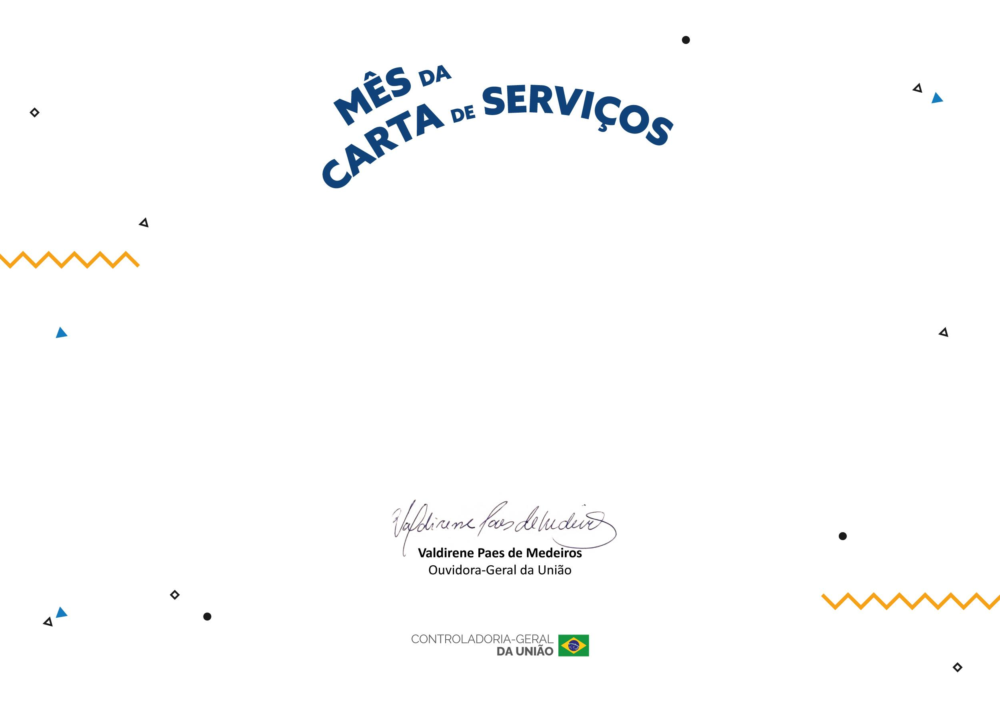

Mês da Carta de Serviços
ABERTURA
Guia da Carta de Serviços

CERTIFICADO DE PARTICIPAÇÃO
A Ouvidoria-Geral da União, da Controladoria-Geral da União (CGU), confere o presente certificado a Agência Nacional de Transportes Aquaviários, em reconhecimento à sua participação no Mês da Carta de Serviços, contribuindo para a disseminação de informações sobre os serviços públicos e o aprimoramento da relação entre a administração pública e a sociedade.
Brasília, 06 de agosto de 2026.
Reconhecimento da CGU
A ANTAQ recebeu da Ouvidoria-Geral da União o certificado de participação no Mês da Carta de Serviços, em 6 de agosto de 2026.
O compromisso continua
Este guia dá sequência à participação: transforma o esforço do Mês da Carta em um ciclo anual de revisão, com responsáveis, prazos e registro no SEI.